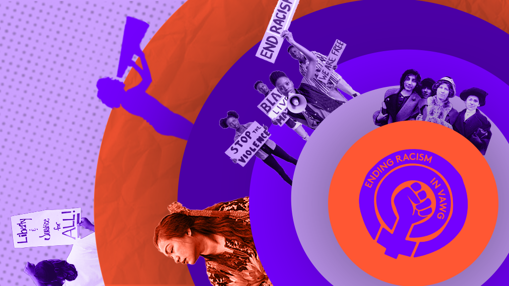
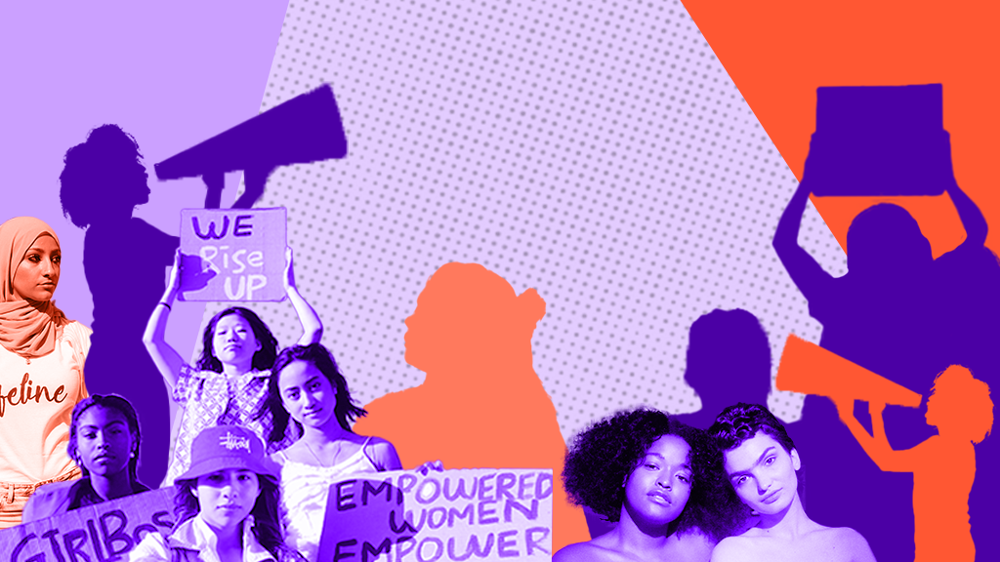

Black and Minoritised
We use the term Black and minoritised, rather than Black and minority ethnic or BME, to make clear that Black and minoritised women and girls represent a global majority subjected to minoritisation through structural inequality. The term 'Black' is used in the political sense (so it is a politicised term), to encompass all women whose herstorys originate from Africa, Asia, the Caribbean and Latin America, including the indigenous peoples of Australasia, the Americas and the islands of the Atlantic, Indian and Pacific Oceans. The term 'minoritised' serves to recognise that individuals have been actively minoritised through social processes of power and domination, and captures the importance of power when talking about race. Used together, Black and minoritised identifies the struggle against racism of a global majority population.
'By and for' Black and minoritised women's services
'By and for' services are those that are led, designed, and delivered by and for Black and minoritised women and girls, with Black and minoritised women making up 100% the staff, leadership and governance of the organisation.
White-led services
The term white-led to refer to women's VAWG services which aren't led by Black and minoritised women.
Intersectionality
Intersectionality provides a framework for conceptualising, articulating and responding to the ways that differently positioned women and girls are subjected to oppression. Intersectionality recognises that women's and girls' identities and social positions are uniquely shaped by a range of factors, including race, ethnicity, sexuality, gender identity, disability, age, class, immigration status, caste, nationality, indigeneity, and faith. Intersectionality provides a way to conceptualise and articulate the ways that oppressions converge, to subjugate, suppress and silence whole groups of women.
"Women and girls are not all the same i.e. linked by biology and at the effect of a single patriarchy. Many of us are required to navigate other systems of inequality based on phenomenon such as 'race', class, disability and sexuality; and this has an effect not only on how we experience and understand violence, but also how and where we access support and justice."
Accountability
We will demonstrate our anti-racist values through our actions and through accountability to Black and minoritised women and to the sector as a whole.
Fairness
We will work together to ensure truly equitable distribution of funding and resources through a collaborative process that actively ensures meaningful inclusion and challenges funding and commissioning practices that perpetuate exclusion.
Collaboration
We have a genuine commitment to equality and ending power imbalances in our sector, through meaningful and collaborative partnership working.
Diversity
Black and minoritised women's organisations have unique expertise, knowledge and experience, and we will be active in recognising their autonomy and ending the appropriation of their work.
Representation
Effective and equitable policy, practice and decision-making needs Black and minoritised women, and 'by and for' organisations, to be visible and represented at every stage.
Equality
We will scrutinise and change organisational practices that lead to Black and minoritised women being excluded from, treated unequally, silenced or side-lined within white-led organisations.
Intersectionality
We will centre an intersectional approach within our work and centre the needs of women facing multiple forms of oppression – including due to race, class, faith, immigration status, disability and sexuality.
Inclusivity
We will communicate in a truly inclusive way which enables the full and equal participation of Black and minoritised women and organisations.

In 2020 the Anti-Racism Working Group published a Call to Action for organisations that work in and with the End Violence Against Women and Girls (VAWG) sector in England and Wales to unite with renewed commitment and mutual accountability to end racism within our movement.
The call to action invites all organisations that operate in the VAWG sector to join forces with us and commit to a clear set of anti-racist standards. It set out a number of values, pledges and actions which the Anti-Racism Working Group called on organisations in the VAWG sector to commit to in order to kick-start the work that is needed to end racism in the sector.

The Feministo was authored, and signed by over 50, Black and minoritised women working to end violence against women and girls. It was published in 2021.
The Feministo sets out the 'signatories' support for the VAWG Sector's Anti-Racism Charter, stating that it signifies and represents a call to action to end racism in the VAWG sector. By endorsing the Anti-Racism Charter, the signatories believe that we are tackling the harm and oppression of racism in our sector and that the priority issues and commitments identified in the Charter are needed to ensure the meaningful engagement with anti-racism action.
The Feministo states that "by implementing the actions of the Anti-Racism Charter that we can support the sector to move from performative allyship following the murder of George Floyd to transformative change and action. We believe that transformative change can only emerge when we name the racialised oppression that we have been subjected to and call out the ways that it manifests itself in our sector."
The Feministo sets out the importance of the Charter in a UK context, recognising that the brutal murder of George Floyd galvanised a sector-wide response to seek justice and end racism, but racism is not something that only occurs elsewhere but must be recognised and acted upon in the UK context.